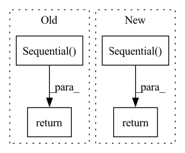

Pattern ID :41156
Before Change
mlp.append(nn.ReLU())
if add_batchnorm:
mlp.append(nn.BatchNorm1d(dims[i+1]))
return nn.Sequential( *mlp)
class LanguageEncoder(torch.nn.Module):
def __init__(self, known_words, embedding_dim, bi_dir):After Change
for i in range(1, len(channels))
])
else:
return nn.Sequential( *[
nn.Sequential(nn.Linear(channels[i - 1], channels[i]), nn.ReLU())
for i in range(1, len(channels))
])
class LanguageEncoder(torch.nn.Module):In pattern: SUPERPATTERN
Frequency: 5
Non-data size: 4
Instances Fragment ID: 116046475
Project Name: mako443/text2pos-cvpr2022
Commit Name: 88c1c8af6aea88e3a9e528f30f519f4a6d1fbaef
Time: 2021-04-16
Author: manuel.kolmet@gmail.com
File Name: models/modules.py
M Class Name: AnonimousClass
N Class Name: AnonimousClass
M Method Name: get_mlp(2)
N Method Name: get_mlp(2)
M Parent Class:
N Parent Class:
M File Name: models/modules.py
N File Name: models/modules.py
M Start Line: 10
M End Line: 19
N Start Line: 21
N End Line: 30
Before Change
activation(),
)
decoder = nn.Sequential(
nn.Linear(latent_dim, layer_size),
activation(),
*[nn.Linear(layer_size, layer_size), activation()] * (n_layers - 2),
nn.Linear(layer_size, n_features),
nn.Sigmoid(),
)
return encoder, decoder
def get_conv_autoencoder_28(activation_fn="selu", dropout=0.5, n_features=1):After Change
]
if final_activation != "none":
decoder_layers.append(get_activation_fn(final_activation)())
return nn.Sequential( encoder_layers) , nn.Sequential(decoder_layers)
def get_conv_autoencoder_28(activation_fn="selu", dropout=0.5, n_features=1): Fragment ID: 116046478
Project Name: online-ml/river-torch
Commit Name: 796985c2ce322d05f0a9f1f74668ce73e1318827
Time: 2021-12-17
Author: lucas.cazzonelli@gmail.com
File Name: IncrementalTorch/nn_functions/anomaly.py
M Class Name: AnonimousClass
N Class Name: AnonimousClass
M Method Name: get_fc_autoencoder(8)
N Method Name: get_fc_autoencoder(7)
M Parent Class:
N Parent Class:
M File Name: IncrementalTorch/nn_functions/anomaly.py
N File Name: IncrementalTorch/nn_functions/anomaly.py
M Start Line: 16
M End Line: 39
N Start Line: 16
N End Line: 43
Before Change
)
self.frame_field_activation = torch.nn.Tanh() if self.frame_field_activation is None \
else instantiate(self.frame_field_activation)
return torch.nn.Sequential(
self.crossfield_conv1,
self.batch_norm,
self.module_activation,
self.crossfield_conv2,
self.frame_field_activation
)
def forward(self, x):
output_dict = dict()
segmentation_features = self.segmentation_model(x) if not self.replace_seg_head \After Change
if not self.compute_crossfield:
return None
return torch.nn.Sequential(
torch.nn.Conv2d(
self.backbone_output + self.seg_channels,
self.backbone_output,
kernel_size=3,
padding=1
),
torch.nn.BatchNorm2d(self.backbone_output) if self.use_batchnorm \
else nn.Identity(),
torch.nn.ELU() if self.module_activation is None \
else instantiate(self.module_activation),
torch.nn.Conv2d(
self.backbone_output,
self.crossfield_channels,
kernel_size=1
),
torch.nn.Tanh() if self.frame_field_activation is None \
else instantiate(self.frame_field_activation)
)
def forward(self, x):
output_dict = dict()
encoder_feats = self.segmentation_model.encoder(x) Fragment ID: 116046479
Project Name: dsgoficial/pytorch_segmentation_models_trainer
Commit Name: f6811b25c41436984db5840f5170480accb50aa0
Time: 2021-03-29
Author: philipeborba@gmail.com
File Name: pytorch_segmentation_models_trainer/model_loader/frame_field_model.py
M Class Name: FrameFieldModel
N Class Name: FrameFieldModel
M Method Name: get_crossfield_module(1)
N Method Name: get_crossfield_module(1)
M Parent Class: nn.Module
N Parent Class: nn.Module
M File Name: pytorch_segmentation_models_trainer/model_loader/frame_field_model.py
N File Name: pytorch_segmentation_models_trainer/model_loader/frame_field_model.py
M Start Line: 109
M End Line: 132
N Start Line: 114
N End Line: 132
Before Change
curr_dim = next_dim
projs.append(nn.Linear(curr_dim, embed_dim))
return nn.Sequential( *projs)
if self.modality in ["audio", "vision"]:
return nn.Linear(self.embed_dim, self.embed_dim)
After Change
A nn.Module layer or block of layers
if self.modality == "text":
return nn.Sequential( nn.Linear(self.embed_dim, self.embed_dim * 2),
nn.GELU(),
nn.Linear(self.embed_dim * 2, self.embed_dim))
if self.modality in ["audio", "vision"]:
return nn.Linear(self.embed_dim, self.embed_dim)
Fragment ID: 116046483
Project Name: aryanshekarlaban/data2vec-pytorch
Commit Name: a3f84dfad364bf018fe66eb873d2aac8db2e55f1
Time: 2022-04-24
Author: arxyzan@gmail.com
File Name: data2vec/data2vec.py
M Class Name: Data2Vec
N Class Name: Data2Vec
M Method Name: _build_regression_head(1)
N Method Name: _build_regression_head(1)
M Parent Class: nn.Module
N Parent Class: nn.Module
M File Name: data2vec/data2vec.py
N File Name: data2vec/data2vec.py
M Start Line: 44
M End Line: 54
N Start Line: 44
N End Line: 46
Before Change
layers = [[torch.nn.Linear(layer_sizes[i],
layer_sizes[i + 1]), acts[i]()]
for i in range(nlayers)]
return torch.nn.Sequential( *layers)
After Change
act[-1] = output_activation
// Create a torch sequential container
mlp = nn.Sequential()
for i in range(nlayers):
mlp.add_module("NN-" + str(i), nn.Linear(layer_sizes[i],
layer_sizes[i + 1]))
mlp.add_module("Act-" + str(i), act[i]())
return mlp
Fragment ID: 116046484
Project Name: geoelements/gns
Commit Name: 7b389624997bcce30b23c08d53d06111b1ec7fbe
Time: 2021-11-12
Author: krishnak@utexas.edu
File Name: gns.py
M Class Name: AnonimousClass
N Class Name: AnonimousClass
M Method Name: build_mlp(5)
N Method Name: build_mlp(5)
M Parent Class:
N Parent Class:
M File Name: gns.py
N File Name: gns.py
M Start Line: 26
M End Line: 42
N Start Line: 24
N End Line: 42